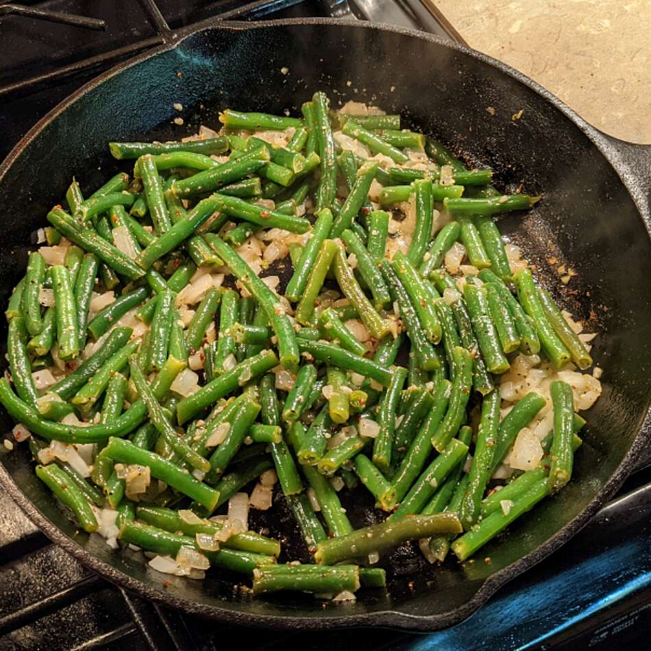

Buttery Garlic Green Beans

Only fresh green beans and garlic will do for this easy, healthy, and flavorful side dish.
Ingredients
- 1 pound fresh green beans, trimmed and snapped in half
- 3 tablespoons butter
- 3 cloves garlic, minced
- 2 pinches lemon pepper
- salt to taste
Steps
- Place green beans into a large skillet and cover with water; bring to a boil. Reduce heat to medium-low and simmer until beans start to soften, about 5 minutes. Drain water. Add butter to green beans; cook and stir until butter is melted, 2 to 3 minutes.
- Cook and stir garlic with green beans until garlic is tender and fragrant, 3 to 4 minutes. Season with lemon pepper and salt.